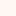
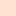
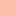

<!doctype html>
<html lang="en">
    <head>
        <meta charset="utf-8">
        <meta http-equiv="X-UA-Compatible" content="IE=edge">
        <meta name="viewport" content="initial-scale=1,user-scalable=no,maximum-scale=1,width=device-width">
        <meta name="mobile-web-app-capable" content="yes">
        <meta name="apple-mobile-web-app-capable" content="yes">
        <link rel="stylesheet" href="css/leaflet.css"><link rel="stylesheet" href="css/L.Control.Locate.min.css">
        <link rel="stylesheet" href="css/qgis2web.css"><link rel="stylesheet" href="css/fontawesome-all.min.css">
        <style>
        html, body, #map {
            width: 100%;
            height: 100%;
            padding: 0;
            margin: 0;
        }
        </style>
        <title></title>
    </head>
    <body>
        <div id="map">
        </div>
        <script src="js/qgis2web_expressions.js"></script>
        <script src="js/leaflet.js"></script><script src="js/L.Control.Locate.min.js"></script>
        <script src="js/leaflet.rotatedMarker.js"></script>
        <script src="js/leaflet.pattern.js"></script>
        <script src="js/leaflet-hash.js"></script>
        <script src="js/Autolinker.min.js"></script>
        <script src="js/rbush.min.js"></script>
        <script src="js/labelgun.min.js"></script>
        <script src="js/labels.js"></script>
        <script src="data/ValordeR0_2.js"></script>
        <script>
        var highlightLayer;
        function highlightFeature(e) {
            highlightLayer = e.target;

            if (e.target.feature.geometry.type === 'LineString') {
              highlightLayer.setStyle({
                color: '#ffff00',
              });
            } else {
              highlightLayer.setStyle({
                fillColor: '#ffff00',
                fillOpacity: 0.5
              });
            }
        }
        var map = L.map('map', {
            zoomControl:true, maxZoom:28, minZoom:1
        })
        var hash = new L.Hash(map);
        map.attributionControl.setPrefix('<a href="https://github.com/tomchadwin/qgis2web" target="_blank">qgis2web</a> &middot; <a href="https://leafletjs.com" title="A JS library for interactive maps">Leaflet</a> &middot; <a href="https://qgis.org">QGIS</a>');
        var autolinker = new Autolinker({truncate: {length: 30, location: 'smart'}});
        L.control.locate({locateOptions: {maxZoom: 19}}).addTo(map);
        var bounds_group = new L.featureGroup([]);
        function setBounds() {
            if (bounds_group.getLayers().length) {
                map.fitBounds(bounds_group.getBounds());
            }
        }
        map.createPane('pane_OSMStandard_0');
        map.getPane('pane_OSMStandard_0').style.zIndex = 400;
        var layer_OSMStandard_0 = L.tileLayer('http://tile.openstreetmap.org/{z}/{x}/{y}.png', {
            pane: 'pane_OSMStandard_0',
            opacity: 1.0,
            attribution: '<a href="https://www.openstreetmap.org/copyright">© OpenStreetMap contributors, CC-BY-SA</a>',
            minZoom: 1,
            maxZoom: 28,
            minNativeZoom: 0,
            maxNativeZoom: 19
        });
        layer_OSMStandard_0;
        map.addLayer(layer_OSMStandard_0);
        map.createPane('pane_ESRIGraylight_1');
        map.getPane('pane_ESRIGraylight_1').style.zIndex = 401;
        var layer_ESRIGraylight_1 = L.tileLayer('http://services.arcgisonline.com/ArcGIS/rest/services/Canvas/World_Light_Gray_Base/MapServer/tile/{z}/{y}/{x}', {
            pane: 'pane_ESRIGraylight_1',
            opacity: 1.0,
            attribution: '',
            minZoom: 1,
            maxZoom: 28,
            minNativeZoom: 0,
            maxNativeZoom: 20
        });
        layer_ESRIGraylight_1;
        map.addLayer(layer_ESRIGraylight_1);
        function pop_ValordeR0_2(feature, layer) {
            layer.on({
                mouseout: function(e) {
                    for (i in e.target._eventParents) {
                        e.target._eventParents[i].resetStyle(e.target);
                    }
                },
                mouseover: highlightFeature,
            });
            var popupContent = '<table>\
                    <tr>\
                        <th scope="row">ObjectID</th>\
                        <td>' + (feature.properties['ObjectID'] !== null ? autolinker.link(feature.properties['ObjectID'].toLocaleString()) : '') + '</td>\
                    </tr>\
                    <tr>\
                        <th scope="row">Município</th>\
                        <td>' + (feature.properties['Município'] !== null ? autolinker.link(feature.properties['Município'].toLocaleString()) : '') + '</td>\
                    </tr>\
                    <tr>\
                        <th scope="row">Valor de R</th>\
                        <td>' + (feature.properties['Valor de R'] !== null ? autolinker.link(feature.properties['Valor de R'].toLocaleString()) : '') + '</td>\
                    </tr>\
                    <tr>\
                        <th scope="row">Situação</th>\
                        <td>' + (feature.properties['Situação'] !== null ? autolinker.link(feature.properties['Situação'].toLocaleString()) : '') + '</td>\
                    </tr>\
                    <tr>\
                        <th scope="row">Previsão</th>\
                        <td>' + (feature.properties['Previsão'] !== null ? autolinker.link(feature.properties['Previsão'].toLocaleString()) : '') + '</td>\
                    </tr>\
                    <tr>\
                        <td colspan="2">' + (feature.properties['Gráfico'] !== null ? '' : '') + '</td>\
                    </tr>\
                </table>';
            layer.bindPopup(popupContent, {maxHeight: 400});
        }

        function style_ValordeR0_2_0(feature) {
            if (feature.properties['Valor de R'] >= 0.790000 && feature.properties['Valor de R'] <= 0.800000 ) {
                return {
                pane: 'pane_ValordeR0_2',
                opacity: 1,
                color: 'rgba(255,255,255,0.0)',
                dashArray: '',
                lineCap: 'butt',
                lineJoin: 'miter',
                weight: 1, 
                fill: true,
                fillOpacity: 0.8,
                fillColor: 'rgba(255,245,240,1.0)',
                interactive: true,
            }
            }
            if (feature.properties['Valor de R'] >= 0.800000 && feature.properties['Valor de R'] <= 0.900000 ) {
                return {
                pane: 'pane_ValordeR0_2',
                opacity: 1,
                color: 'rgba(255,255,255,0.0)',
                dashArray: '',
                lineCap: 'butt',
                lineJoin: 'miter',
                weight: 1, 
                fill: true,
                fillOpacity: 0.8,
                fillColor: 'rgba(254,214,196,1.0)',
                interactive: true,
            }
            }
            if (feature.properties['Valor de R'] >= 0.900000 && feature.properties['Valor de R'] <= 1.000000 ) {
                return {
                pane: 'pane_ValordeR0_2',
                opacity: 1,
                color: 'rgba(255,255,255,0.0)',
                dashArray: '',
                lineCap: 'butt',
                lineJoin: 'miter',
                weight: 1, 
                fill: true,
                fillOpacity: 0.8,
                fillColor: 'rgba(252,164,135,1.0)',
                interactive: true,
            }
            }
            if (feature.properties['Valor de R'] >= 1.000000 && feature.properties['Valor de R'] <= 1.100000 ) {
                return {
                pane: 'pane_ValordeR0_2',
                opacity: 1,
                color: 'rgba(255,255,255,0.0)',
                dashArray: '',
                lineCap: 'butt',
                lineJoin: 'miter',
                weight: 1, 
                fill: true,
                fillOpacity: 0.8,
                fillColor: 'rgba(252,112,80,1.0)',
                interactive: true,
            }
            }
            if (feature.properties['Valor de R'] >= 1.100000 && feature.properties['Valor de R'] <= 1.200000 ) {
                return {
                pane: 'pane_ValordeR0_2',
                opacity: 1,
                color: 'rgba(255,255,255,0.0)',
                dashArray: '',
                lineCap: 'butt',
                lineJoin: 'miter',
                weight: 1, 
                fill: true,
                fillOpacity: 0.8,
                fillColor: 'rgba(235,54,42,1.0)',
                interactive: true,
            }
            }
            if (feature.properties['Valor de R'] >= 1.200000 && feature.properties['Valor de R'] <= 1.300000 ) {
                return {
                pane: 'pane_ValordeR0_2',
                opacity: 1,
                color: 'rgba(255,255,255,0.0)',
                dashArray: '',
                lineCap: 'butt',
                lineJoin: 'miter',
                weight: 1, 
                fill: true,
                fillOpacity: 0.8,
                fillColor: 'rgba(186,20,25,1.0)',
                interactive: true,
            }
            }
            if (feature.properties['Valor de R'] >= 1.300000 && feature.properties['Valor de R'] <= 1.400000 ) {
                return {
                pane: 'pane_ValordeR0_2',
                opacity: 1,
                color: 'rgba(255,255,255,0.0)',
                dashArray: '',
                lineCap: 'butt',
                lineJoin: 'miter',
                weight: 1, 
                fill: true,
                fillOpacity: 0.8,
                fillColor: 'rgba(103,0,13,1.0)',
                interactive: true,
            }
            }
        }
        map.createPane('pane_ValordeR0_2');
        map.getPane('pane_ValordeR0_2').style.zIndex = 402;
        map.getPane('pane_ValordeR0_2').style['mix-blend-mode'] = 'normal';
        var layer_ValordeR0_2 = new L.geoJson(json_ValordeR0_2, {
            attribution: '',
            interactive: true,
            dataVar: 'json_ValordeR0_2',
            layerName: 'layer_ValordeR0_2',
            pane: 'pane_ValordeR0_2',
            onEachFeature: pop_ValordeR0_2,
            style: style_ValordeR0_2_0,
        });
        bounds_group.addLayer(layer_ValordeR0_2);
        map.addLayer(layer_ValordeR0_2);
        var baseMaps = {};
        L.control.layers(baseMaps,{'Valor de R<br /><table><tr><td style="text-align: center;"></td><td>≤ 0.8</td></tr><tr><td style="text-align: center;"></td><td>0.8 - 0.9</td></tr><tr><td style="text-align: center;"></td><td>0.9 - 1.0</td></tr><tr><td style="text-align: center;"></td><td>1.0 - 1.1</td></tr><tr><td style="text-align: center;"></td><td>1.1 - 1.2</td></tr><tr><td style="text-align: center;"></td><td>1.2 - 1.3</td></tr><tr><td style="text-align: center;"></td><td>≥ 1.3</td></tr></table>': layer_ValordeR0_2,"ESRI Gray (light)": layer_ESRIGraylight_1,"OSM Standard": layer_OSMStandard_0,},{collapsed:false}).addTo(map);
        setBounds();
        var i = 0;
        layer_ValordeR0_2.eachLayer(function(layer) {
            var context = {
                feature: layer.feature,
                variables: {}
            };
            layer.bindTooltip((layer.feature.properties['Município'] !== null?String('<i><div style="color: #525157; text-shadow: 1px 1px white; font-size: 15pt; font-family: \'Arial\', sans-serif" id="municipio-fonte"><i>' + layer.feature.properties['Município']) + '</div>':''), {permanent: true, offset: [-0, -16], className: 'css_ValordeR0_1'});
            labels.push(layer);
            totalMarkers += 1;
              layer.added = true;
              addLabel(layer, i);
              i++;
        });
        resetLabels([layer_ValordeR0_2]);
        map.on("zoomend", function(){
            resetLabels([layer_ValordeR0_2]);
        });
        map.on("layeradd", function(){
            resetLabels([layer_ValordeR0_2]);
        });
        map.on("layerremove", function(){
            resetLabels([layer_ValordeR0_2]);
        });
        </script>
    </body>
</html>
